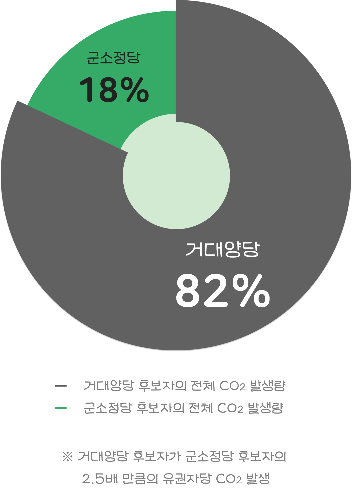

2022년 제8회 지방선거가
끝나고 남겨진 것들:
4,125명의 당선자,
3,491명의 낙선자,
그리고
12,853톤의 선거쓰레기.
환경x지방선거,
환경 없는 지방선거
'쓰레기 없는 선거'에 투표하겠습니다
2022년 6월 1일 제8회 전국동시지방선거가 치러졌습니다. 선거가 끝남과 동시에 후보자들이 사용했던 현수막, 벽보, 공보 등은 고스란히 폐기물이 되었습니다. 특히 선거 현수막은 특유의 알록달록한 색감 때문에 재활용도 잘 되지 않았습니다. 지난 3월에 있었던 제20대 대통령선거에서는 총 1111t의 현수막이 쓰였지만, 그중 재활용된 것은 273t(24.6%)에 그쳤죠. 그렇다면 재활용되지 않은 현수막은? 태워지거나, 땅에 묻힙니다.
선거 쓰레기의 심각성은 후보자가 많은 지방선거에서 특히 대두되어 왔습니다. 일각에서는 종이 홍보물을 전자 홍보물로 대체하자는 제안도 나오고 있죠. 그러나 2018년 국회는 오히려 선거운동의 자유를 확대하겠다며 현수막 게시 제한 조항을 완화했습니다. ‘친환경 선거’를 위해서는 아직 갈 길이 멀어 보입니다.
2022학년도 1학기 ‘비주얼라이제이션’ 쌈D팀은 제 7회 지선 당시 후보자들이 선거운동 과정에서 배출한 이산화탄소환산량을 살펴보려 합니다.
여느 때만큼이나 후보자들이 승리를 간절히 원했을 그때, 환경에 대해서도 그만큼 생각했을까요?
또, 환경을 중요하게 생각한다며 친환경 공약을 내세웠던 후보들은, 그렇지 않은 후보들보다 더 친환경적인 선거운동을 했을까요?
우리 동네
‘친환경 후보’님을 찾습니다
형형색색 선거복. 후보들의 얼굴이 대문짝만 하게 찍힌 현수막. 강렬한 사운드의 유세차량. '선거' 하면 떠오르는 물건들입니다.
그러나 플라스틱 합성수지 원단인 현수막은 재활용이 어렵고, 벽보, 공보 같은 홍보물 역시 코팅된 종이라 재활용하기 난감합니다. 선거 시즌에만 입고 버릴 선거복은 또 어떻고요. 유세할 때 타고 다니는 차량부터, 거기 실린 전광판에 전기를 공급하는 디젤 발전기까지. 친환경 선거를 치르기란 분명 쉽지만은 않습니다.
그럼에도 어떤 후보는 그러기 위해 섬세히 주의를 기울이며, 어떤 후보는 그렇지 않습니다.
지도를 눌러
시도별 실태를 확인해보세요!
물론 친환경 공약을 내세운 후보가 실제 선거운동에서는 이산화탄소를 많이 발생시켰다고 해도, 후보자의 환경을 생각하는 마음이 가짜였다고 단정지을 수는 없겠죠. 그러나 환경을 생각한다는 후보조차도 선거철에는 환경을 뒷전에 둘 수 있는 거라면, 환경 문제는 대체 언제 해결될 수 있을까요?
저는 환경 문제고요,
기다린 지 꽤 됐습니다
물론 환경을 지키려는 후보자들의 노력이 없었던 건 아닙니다. 제7회 지선에서는 광역자치단체장 후보들이 당시 큰 화두였던 미세먼지 정책을 내놓는 한편, 몇몇 후보는 ‘지역 경제의 체질을 친환경으로 혁신하겠다,’ 등과 같이 거시적인 공약을 제시하기도 했죠.
그렇다면 그들의 실제 선거 운동은 어땠을까요? 환경에 대한 관심이 진정성 있는 실천으로 이어졌을까요, 아니면 환경 공약을 내세우지 않았던 후보자들보다도 더 많은 이산화탄소를 발생시켰을까요?

17개 시도 광역자치단체장 후보 중, 환경 공약을 내세운 후보들과 그렇지 않은 후보들의 이산화탄소발생량 평균을 비교해 봤는데요. 이 수치를 통해 환경 공약을 내세운 후보들이 정말 환경에 진심이었다고 말할 수 있을까요? 보다 구체적으로, 후보자 한 명 한 명의 환경 등급을 살펴볼 차례입니다.
벽보를 눌러
후보자의 환경 등급 확인해보세요!


비록 환경 공약을 앞세운 후보 모두를 살피지는 못했지만, 환경 공약을 앞세웠다고 선거운동에서도 이산화탄소를 적게 발생시킨 건 아니었음을 알 수 있습니다. 환경을 공약을 번지르르하게 제시했어도 본인의 실천으로 이어지지 않는다면 공허한 외침에 지나지 않겠죠.
그러나 누군가는 이렇게 이야기할 수 있어요. ‘무조건 당선이 우선 아냐? 당선이 돼야 환경 공약도 펼칠 수 있잖아.” 틀린 말은 아닙니다. 당선 이후 환경을 열심히 지켜 가겠다는 일념으로, 선거운동 때만 잠시 한 수 접어둔 후보들도 있을 수 있죠.
그러나 그 전에 먼저 지적돼야 할 것이 있습니다. ‘당선’을 위해서는 ‘친환경’을 포기해야 하나요?
‘당선 vs 환경’의
대결 구도 자체가 문제
앞서 언급했듯이 2018년, 선관위는 현수막 게시 제한 조항을 완화했습니다. 선거에서 이기고자 하는 후보들에게, 환경을 위해 현수막 사용을 자제하라고 말하는 것은 효과가 크지 않을지 모릅니다. 그러니 당선과 친환경이 양립 가능하게 되기 위해서는 거대 양당과 선관위가 앞장서야 합니다.
거대양당의 규모를 생각하면 전체 이산화탄소배출량에서 차지하는 비중이 높은 것은 어쩌면 자연스러운 일일지도 모릅니다. 그러나, 거대양당 후보 중 평균보다 배출량이 높은 후보의 비중을 보면, 군소정당의 경우보다 높은 것을 알 수 있습니다. 이런 상황에서 거대 양당이 친환경 선거를 위해 앞장서지 않는다면, 군소정당이 친환경 선거를 위한 움직임에 뛰어들기란 더더욱 어려워질 것입니다. 또 2018년 선관위의 규정 변화 이후 현수막 사용량이 증가했다는 건, 반대로 선관위의 규정이 강화됐을 때 선거 쓰레기가 줄어들 수 있다는 뜻으로 읽히기도 합니다.
환경 문제는 당선을 위해서
나중으로 미뤄도 되는 것이 아니라
지금, 여기,
우리의 문제라는 것을 인지하고
행동으로 옮길 때에만
변화할 수 있습니다.
만든이
고지형
김도영
김혜원
송예은
이예은